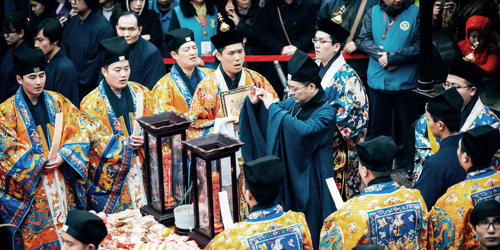
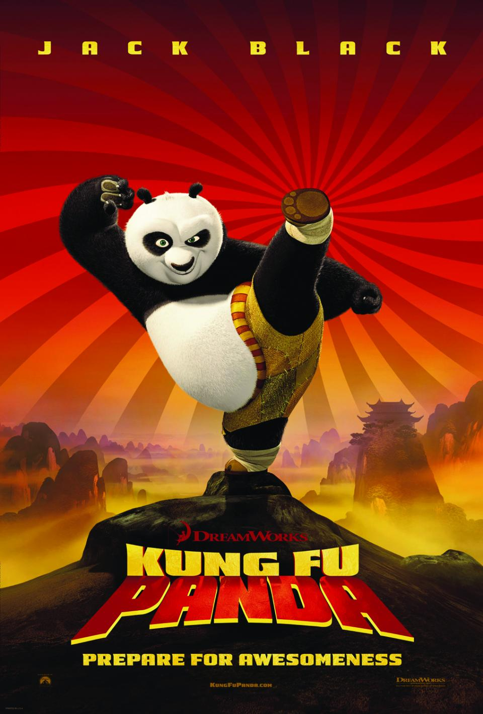

Daoist-inspired films often explore harmony with the natural world, flowing with change, and the tension between effort and effortless action (wu wei). Rather than presenting strict rules, they highlight spontaneity, balance between opposites, and the search for an authentic way of living. The examples here show one way Daoist ideas and imagery appear in cinema, not the whole breadth of the tradition.

While playful and comedic, Kung Fu Panda echoes Daoist themes of balance and inner harmony. Po’s journey is less about becoming someone else and more about discovering the “secret ingredient” within himself. The film uses martial arts, mentorship, and nature motifs to explore letting go of rigid control and learning to move with the flow of life.